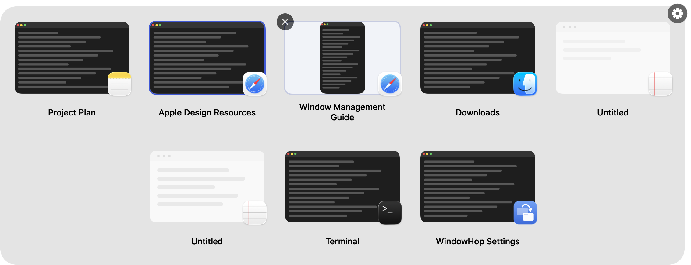
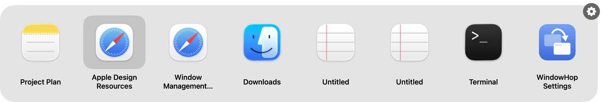
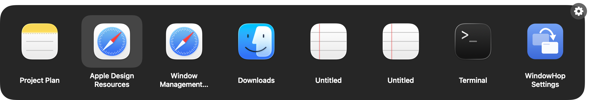
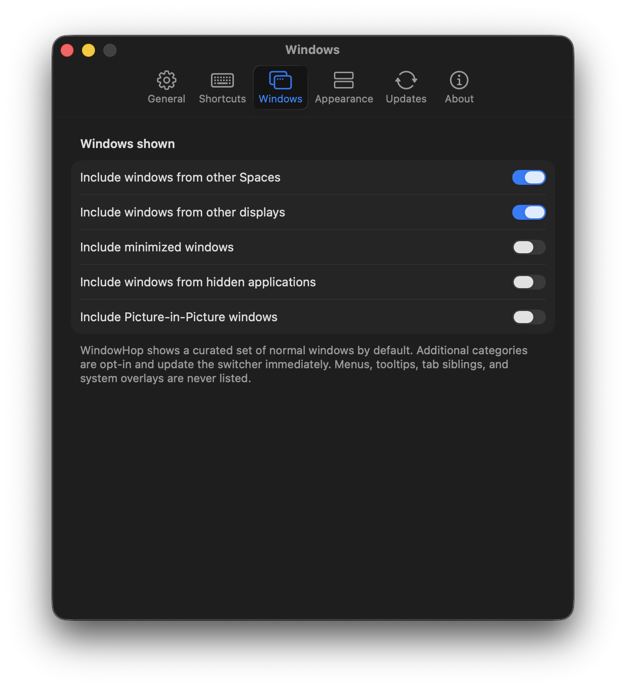

Keyboard-first
Cycle with ⌘Tab, open a persistent switcher with ⌥Tab, or choose your own shortcuts.
A native window switcher for macOS
See every top-level window, move with the keyboard, and land on the exact one you need.
Free and open source · macOS 14 or later

Window-level control
Command–Tab normally stops at the application. WindowHop gives each window its own place, with visual previews, native titles, and fast forward, reverse, and arrow-key navigation.


Made for the Mac
Cycle with ⌘Tab, open a persistent switcher with ⌥Tab, or choose your own shortcuts.
Optional live snapshots, memory-only caching, polished skeleton states, and stable card geometry.
Include other Spaces, displays, minimized windows, hidden apps, or Picture-in-Picture when useful.
Semantic AppKit surfaces, native system type, and appearance-aware selection in both modes.
General, Shortcuts, Windows, Appearance, Updates, and About panes — all one size — with one confirmed Restore Defaults action.
Pause to inspect a larger snapshot inside WindowHop without activating or raising the real window.
Your workflow
Normal windows across your visited Spaces and displays are included by default. Optional categories stay opt-in, tab counts stay out of the way, and every preference can return to its documented default.

Latest stable release
For macOS 14 or later. Signed with Developer ID, notarized by Apple, and distributed in a branded drag-to-Applications installer.
Browse all GitHub ReleasesOpen source
WindowHop is GPL-3.0 free software developed by Marton Paulo. It is derived from AltTab by Louis Pontoise (lwouis) and contributors, with gratitude and upstream attribution preserved.